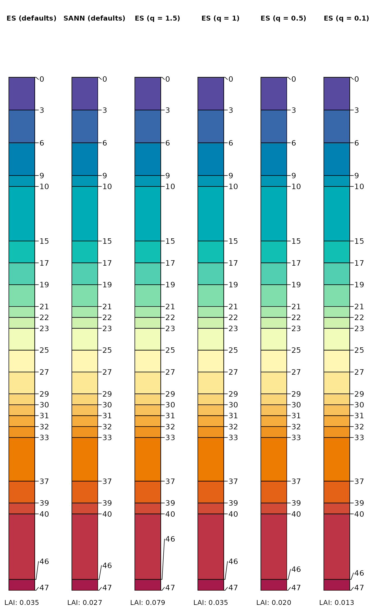

Fix Overlap within a Sequence
fixOverlap(x, thresh = 0.6, method = c("S", "E"), trace = FALSE, ...)vector of initial positions, pre-sorted
numeric, overlap threshold defined on the same scale as x
character vector, 'S' for simulated annealing via SANN_1D() or 'E' for electrostatic simulation via electroStatics_1D()
logical, return full output
additional arguments to SANN_1D() or electroStatics_1D()
When trace = FALSE, a vector of the same length as x, preserving rank-ordering and boundary conditions. When trace = TRUE a list containing the new sequence along with information about objective functions and decisions made during adjustment of x.
s <- c(1, 2, 2.3, 4, 5, 5, 7)
# simulated annealing, solution is non-deterministic
fixOverlap(s, thresh = 0.6, method = 'S')
#> 46 iterations
#> [1] 1.439573 2.130042 3.070949 4.042970 5.459356 4.721563 6.940510
#> attr(,"converged")
#> [1] TRUE
# electrostatics-inspired simulation of particles
# solution is deterministic
fixOverlap(s, thresh = 0.6, method = 'E')
#> 100 iterations
#> [1] 1.000000 1.800766 2.439839 4.000000 4.685761 5.651731 7.000000
#> attr(,"converged")
#> [1] FALSE
# create a very busy profile with lots of possible overlapping
# depth annotation
x <- quickSPC(
"SPC:AAA|BBB|CCC|D|EEEEE|FF|GG|HH|I|I|JJ|KK|LL|M|N|O|P|QQQQ|RR|S|TTTTTT|U",
interval = 1
)
# plotSPC arguments
.a <- list(
width = 0.2,
hz.depths = TRUE,
name.style = 'center-center',
cex.names = 1.5,
plot.depth.axis = FALSE,
name = NA,
color = 'hzID',
show.legend = FALSE,
print.id = FALSE
)
# set plotSPC default arguments
options(.aqp.plotSPC.args = .a)
# wrapper function to test label collision solutions
testIt <- function(x, ...) {
plotSPC(x, ...)
# a normalized index of label adjustment
.txt <- sprintf(
"LAI: %0.3f",
get('last_spc_plot', envir = aqp.env)$hz.depth.LAI
)
mtext(.txt, side = 1, at = 1, line = -2, cex = 0.8)
}
# compare and contrast
par(mar = c(0, 0, 0, 0), mfcol = c(1, 6))
testIt(x)
title('ES (defaults)', line = -3)
testIt(x, fixOverlapArgs = list(method = 'S'))
title('SANN (defaults)', line = -3)
testIt(x, fixOverlapArgs = list(method = 'E', q = 1.5))
title('ES (q = 1.5)', line = -3)
testIt(x, fixOverlapArgs = list(method = 'E', q = 1))
title('ES (q = 1)', line = -3)
testIt(x, fixOverlapArgs = list(method = 'E', q = 0.5))
title('ES (q = 0.5)', line = -3)
testIt(x, fixOverlapArgs = list(method = 'E', q = 0.1))
title('ES (q = 0.1)', line = -3)
